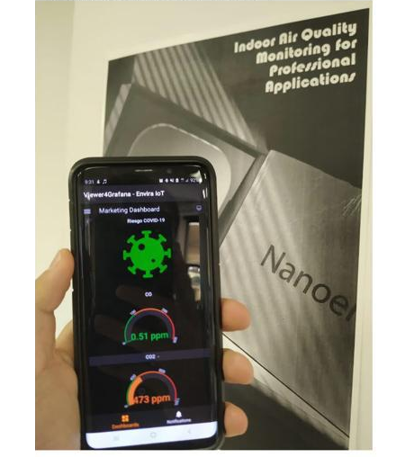

Productos IoT
DataScience & Machine Learning Solutions Honduras es partner y distribuidor de la Empresa Española Envira, quienes se dedican a la fabricación de productos con sensores Internet of Things (IoT) a nivel mundial. DataScience brinda soporte a estas aplicaciones y a los productos de IoT, los cuales generan datos y los envian a un dashboard como grafana que ayuda monitorear los datos en tiempo real. Dentro de las aplicaciones de nuestro producto estrella IAQ está el monitoreo de la calidad de aire de las escuelas, restaurantes, hospitales, oficinas, tiendas, salas de belleza, gimnacios, cines, teatros, centros comerciales, otros lugares públicos y privados, pero democratizando datos. Como complemento a este producto ofrecemos y alquilamos para eventos purificadores de aire de hasta 50.0 mts cuadrados en un hora.
| Producto | Fotos | Dashboard | Medición/ Métricas | Infografía | |
|---|---|---|---|---|---|
| IAQ Medidor de la Calidad de Aire |
.jpg)
|
 | Temperatura, Humedad, Presión barométrica, la cual está relacionada con los flujos de aire que causan bacterias, polvo y otros contaminantes en el aire. Si la presión de aire en la habitación es más baja que en el exterior, la contaminación de la habitación no fluye hacia las áreas circundantes VOC (Compuestos Orgánicos Volátiles, CO, CO2, El PM 2.5 y PM 10 (partículas de menos de 2.5 y de 10 micrómetros de diámetro) puede penetrar profundamente en el pulmón, irritar y corroer la pared alveolar y, en consecuencia, dañar la función pulmonar. | Infografía | |
| Purificador de Aire de 50 mts cuadrados | Sólo muestra colores en función de la calidad de aire | Purifica 50mts cuadrados en una hora, así mismo mide la calidad del aire. Asimismo, es ideal para educación o oficinas porque la emisión de decibeles es de 25 a 54 dB. |
1. IAQ
2. Diseños de páginas Web y logos empresariales Bootstrap, React y JavaScript.
3. Sistemas de gestión de inventarios empresariales con Google Cloud y Dashboards en tiempo real.
4. Sistemas de gestión de ventas empresariales con Google Cloud y Dashboards en tiempo real.
5. Sistemas de gestión de
Servicios
1. Formulación y Evaluación de políticas públicas formativas y sumativas con métodos estadísticos.
2. Diseños de páginas Web y logos empresariales Bootstrap, React y JavaScript.
3. Sistemas de gestión de inventarios empresariales con Google Cloud y Dashboards en tiempo real.
4. Sistemas de gestión de ventas empresariales con Google Cloud y Dashboards en tiempo real.
5. Sistemas de gestión de efectivo empresariales con Google Cloud y Dashboards en tiempo real.
6. Estudios de Mercado y segmentación (clústering).
7. Marketing digital.
8. Georeferenciación de clientes para optimizar tus ventas y campañas de MKT
10. Campañas comerciales y políticas (Análisis de Sentimiento Twitter).
11. Encuestas políticas.
12. Inteligencia, Ordenamiento y Machine Learninig Territorial (espacial y temporal) mediante GIS.
13. Sistemas de Gestión Referenciados Comerciales y para la Formulación de Políticas públicas.
14. Capacitación en R y Python en DataScience Empresarial y Consultorías.
15. Asesoría de tesis de maestría y doctorado.